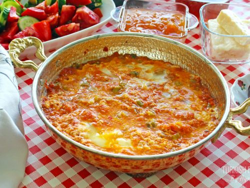

Menemen Recipe

Description
TMenemen is a traditional and very common Turkish Breakfast dish. It is a simple and delicious egg dish you can enjoy at any time of the day as well as breakfast time. “Pantry” meals that take less than 15 minutes to make, each makes enough for 6 people.
Ingredients
- 2-3 tbsp olive oil 1 tbsp butter
- 3-4 sweet or mild hot green peppers
- about 1/3 cup white Turkish feta cheese or similar kinds you can find
- 3-4 eggs salt, red pepper flakes to season
Steps
- First cut the green peppers. Take out the stems and seeds and cut it into cubes.
- It is always better to use the correct size pan for the serving size. For 3-4 people 23cm (9 inches) pan is ok. Add oil and butter to the pan and melt. Add the peppers and begin to saute.
- After it is browned add grated tomatoes. Cook it until the tomatoes are cooked well and shiny.
- To season add salt, red pepper flakes. Add the feta cheese or mix of feta, ricotta like cheeses. Cook until the cheeses melt for about 30-40 seconds. If your cheese has too much water you can cook a bit more.
- Crack the eggs and break a little bit but not too much. Don’t cook them too much it is important. You can also keep the yolks without breaking it too. You can partially close the lid but not all the way since it creates steam and cooks the top of the eggs that we don’t want.
- Serve the menemen hot with Turkish breakfast and tea. Traditionally we eat by dipping a piece of bread and have some from the menemen with the bread together (Watch the end of the video:) and enjoy! Afiyet olsun!